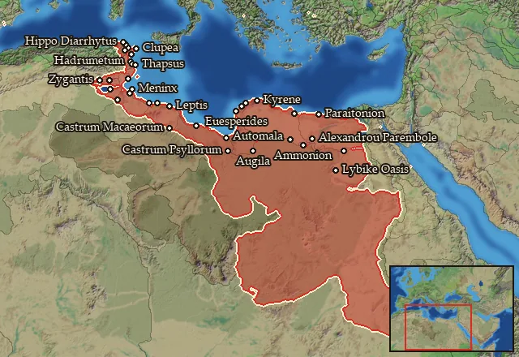

RTR: Imperium Surrectum
RTR: Imperium SurrectumRIS wiki › mercenaries
Libya
← all mercenary pools · wiki index
Mercenary pool: 1 unit for hire in 35 regions.

Mercenaries
| Unit | Cost (dn) | Experience | At start | Most in pool | Added per turn | Who can hire | |
|---|---|---|---|---|---|---|---|
| Mercenary Libyan Skirmishers | 2,746 | 0 | 2 | 3 | 0.6011–1.2021 | Any faction |
Regions (35)
Adrumet · Ammonia · Aspis · Atarantia-Gindania · Barke · Boreia Libya · Bracheion · Deutera Oasis · Epichos · Euesperidai · Hesperos Aigyptos · Hesperos Kyrenaike · Katabathmos · Kyrenaike · Lepqi Adir · Lepqi Zaxyirt · Macaea · Machlya · Maqoma Zaxyir · Marmarike · Maxya-Ausea · Nasamonia · Notia Libya · Psyllia · Qart-Khadasht · Qart-Khadasht Zaxyir · Syrtis · Taucheira · Thapsos · Tunesia · Woyxat · Xatiq · Xupon Zaxyir · Zabrutuxun · Zygantia-Zauecia